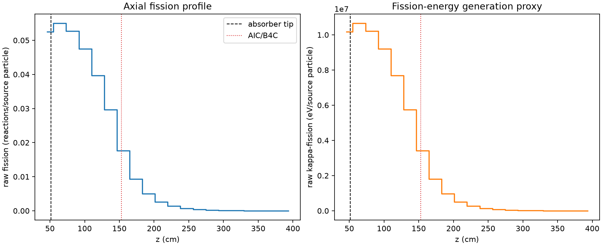
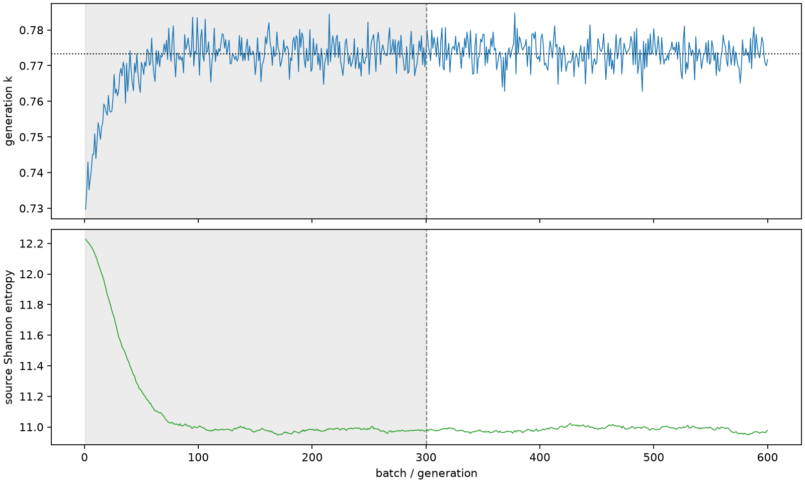

| field | value |
|---|---|
| experiment | V2-STAGE_128_OGRENCI_02-0001 |
| k | 0.7733682834744433 |
| MC standard error | 0.00016367149067475804 |
| seconds | 1181.3404982900001 |
| acceptance | not_assessed |
| convergence | review_required |
Completed is output integrity only; physical and statistical review required. Zero tallies do not prove zero production or zero uncertainty.
| diagnostic | value |
|---|---|
| geometric fuel voxels | 5280 |
| zero fission tally voxels | 0 |
| low signal fuel voxels | 1184 |
| low signal fission share | 0.00022374999954925584 |
| low signal kappa share | 0.0002237776983455169 |
| important fission share | 0.9500017131897438 |
| previous filter included | 4096 |
| duration estimate s | 1562.5173488400023 |
| actual minus estimate s | -381.1768505500022 |
| fission relative MC error | statistics |
|---|---|
| all_geometric_fuel | {"voxels": 5280, "positive_mean_voxels": 5280, "zero_mean_voxels": 0, "undefined_relative_error_voxels": 0, "median": 0.03454095186196593, "p95": 0.5567526715577686, "maximum": 1.0} |
| low_signal | {"voxels": 1184, "positive_mean_voxels": 1184, "zero_mean_voxels": 0, "undefined_relative_error_voxels": 0, "median": 0.38831398499511327, "p95": 0.7815668959979835, "maximum": 1.0} |
| important_95pct | {"voxels": 1947, "positive_mean_voxels": 1947, "zero_mean_voxels": 0, "undefined_relative_error_voxels": 0, "median": 0.007248335920880836, "p95": 0.013506498482477206, "maximum": 0.018065647386049176} |
| outside_previous_filter | {"voxels": 1184, "positive_mean_voxels": 1184, "zero_mean_voxels": 0, "undefined_relative_error_voxels": 0, "median": 0.38831398499511327, "p95": 0.7815668959979835, "maximum": 1.0} |
| kappa_fission relative MC error | statistics |
|---|---|
| all_geometric_fuel | {"voxels": 5280, "positive_mean_voxels": 5280, "zero_mean_voxels": 0, "undefined_relative_error_voxels": 0, "median": 0.034474198616385114, "p95": 0.5565787234443201, "maximum": 1.0000000000000002} |
| low_signal | {"voxels": 1184, "positive_mean_voxels": 1184, "zero_mean_voxels": 0, "undefined_relative_error_voxels": 0, "median": 0.3873825403204981, "p95": 0.7804733041184887, "maximum": 1.0000000000000002} |
| important_95pct | {"voxels": 1947, "positive_mean_voxels": 1947, "zero_mean_voxels": 0, "undefined_relative_error_voxels": 0, "median": 0.007235413625281522, "p95": 0.013483375932667732, "maximum": 0.01803466692981143} |
| outside_previous_filter | {"voxels": 1184, "positive_mean_voxels": 1184, "zero_mean_voxels": 0, "undefined_relative_error_voxels": 0, "median": 0.3873825403204981, "p95": 0.7804733041184887, "maximum": 1.0000000000000002} |
| axial bin | fission share | kappa-fission share |
|---|---|---|
| 1 | 0.16678788924852858 | 0.16675651664239963 |
| 2 | 0.17474074302533613 | 0.1747448182964809 |
| 3 | 0.167460170499924 | 0.16746399748703367 |
| 4 | 0.15110747502426436 | 0.15111130058520367 |
| 5 | 0.1262500758195101 | 0.1262532153920427 |
| 6 | 0.09443363568743865 | 0.09443646069874166 |
| 7 | 0.0561733945342976 | 0.056178298175793735 |
| 8 | 0.029590531401706578 | 0.029594547808188765 |
| 9 | 0.015764027244532713 | 0.015766294195261436 |
| 10 | 0.0083108651019754 | 0.008311940041446347 |
| 11 | 0.0043892963990853585 | 0.004389980594363524 |
| 12 | 0.0023218471554383884 | 0.0023222274427588223 |
| 13 | 0.0013177673794841725 | 0.0013179515973213735 |
| 14 | 0.0006838407884801003 | 0.0006839334823132545 |
| 15 | 0.0003540996870570146 | 0.00035413935078479195 |
| 16 | 0.00016839647318656075 | 0.000168412306743473 |
| 17 | 7.86809191491031e-05 | 7.868312727145491e-05 |
| 18 | 4.119061531060462e-05 | 4.120408677738935e-05 |
| 19 | 1.9957431832285366e-05 | 1.996079188083505e-05 |
| 20 | 6.115563462302552e-06 | 6.1178971926459425e-06 |
Histories include the inactive-to-active transition at batch 300. kappa-fission approximates fission energy production, not total heat deposition.

